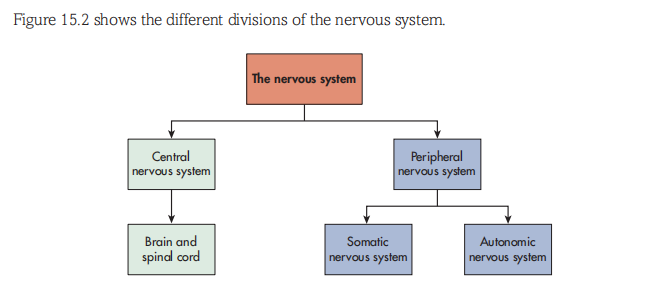
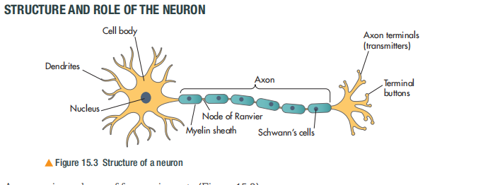
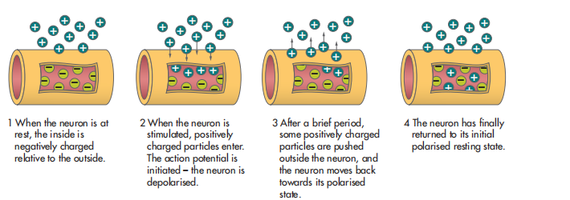
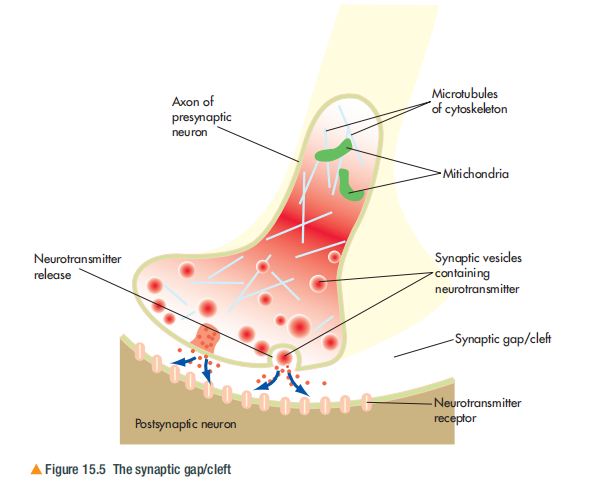
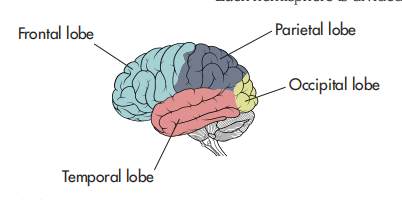
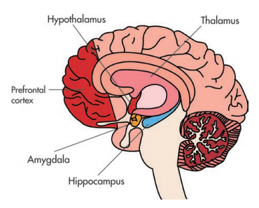

🧠 Topic C: Biological Psychology
Chapter 15 — Brain Regions and Aggression
🎯 Learning Objectives（学习目标）
By the end of this chapter you should be able to:
- Understand the central nervous system (CNS) and its divisions（理解中枢神经系统及其分区）
- Describe the structure and role of the neuron（描述神经元的结构和功能）
- Explain the function of neurotransmitters and synaptic transmission（解释神经递质和突触传递的功能）
- Identify brain structures (lobes and key areas)（识别大脑结构：脑叶和关键区域）
- Describe and evaluate brain functioning as an explanation of aggression（描述并评估大脑功能对攻击性的解释）
- Describe and evaluate the role of hormones and genetics in aggression（描述并评估激素和基因在攻击性中的作用）
1️⃣ The Nervous System（神经系统）
1.1 Central Nervous System (CNS)（中枢神经系统）
The CNS consists of the brain and spinal cord. It is the central processing and control point for all human behaviour.
- Brain（大脑）: Processes all incoming information from the senses and is responsible for controlling behaviour that results from this information.
- Spinal Cord（脊髓）: Connects the brain to the rest of the body. Allows messages to be passed from the body to the brain, and also from the brain to other parts of the body.

1.2 Peripheral Nervous System (PNS)（周围神经系统）
The nerves branching out from the CNS are collectively referred to as the PNS. This is responsible for facilitating communication between the CNS and the rest of the body.
Somatic Nervous System（躯体神经系统）
Responsible for transmitting sensory information from the body to the brain, and for transmitting motor signals from the brain to the body which cause movement (such as wiggling your toes).
→ Voluntary control（自主控制）
Autonomic Nervous System (ANS)（自主神经系统）
Responsible for regulating involuntary processes, such as heart rate, and maintaining homeostasis（稳态）in the body.
→ Involuntary control（非自主控制）
1.3 Autonomic Nervous System Divisions（自主神经系统的分支）
| Division（分支） | Function（功能） | Example（例子） |
|---|---|---|
| Sympathetic（交感神经） | 'Fight or flight' response（战斗或逃跑反应）— prepares the body to deal with stressful or emergency situations by increasing heart rate and respiration, releasing adrenaline and norepinephrine（肾上腺素和去甲肾上腺素）into the bloodstream. | Heart racing when scared 😰 |
| Parasympathetic（副交感神经） | 'Rest and digest' response（休息和消化反应）— works to restore the body to its natural resting state（让身体恢复自然静止状态）. | Heart slowing down after relaxation 😌 |
The process by which the body maintains the internal environment, including blood pressure, blood sugar levels and body temperature.
- CNS = Brain + Spinal Cord（中枢神经 = 大脑 + 脊髓）
- PNS = Somatic (voluntary) + Autonomic (involuntary)（周围神经 = 躯体 + 自主）
- ANS = Sympathetic (arousal) vs Parasympathetic (calm)（自主 = 交感 vs 副交感）
- Sympathetic releases adrenaline → 'fight or flight'（交感释放肾上腺素 → 战斗或逃跑）
- Parasympathetic restores homeostasis（副交感恢复稳态）
🧠 神经系统就像一个国家的通信网络：
• CNS（中枢）= 首都：大脑是总统府（决策中心），脊髓是高速公路（信息通道）
• PNS（周围）= 地方通信线路：
- Somatic（躯体） = 你主动打电话（动手指、走路）
- Autonomic（自主） = 自动运行的系统（心跳、消化）
• ANS 的两个分支就像油门和刹车：
- Sympathetic（交感）= 油门：遇到危险时踩油门，心跳加速，准备战斗或逃跑 🏃♂️
- Parasympathetic（副交感）= 刹车：安全后踩刹车，身体放松，恢复平静 😴
🎯 考试技巧：一定要能画出 Figure 15.2 的层级图！CNS → PNS → Somatic/Autonomic → Sympathetic/Parasympathetic
2️⃣ Structure and Role of the Neuron（神经元的结构与功能）
A neuron（神经元） is a specialised cell that transmits electrical and chemical messages around the body. Neurons communicate with around 1,000 other cells at a time in huge networks.

2.1 Four Main Parts of a Neuron（神经元的四个主要部分）
| Part（部分） | Structure（结构） | Function（功能） |
|---|---|---|
| Cell Body（细胞体） | Contains the nucleus（细胞核）mitochondria（线粒体） that provide energy. | The "control centre" of the neuron — processes information and keeps the cell alive. |
| Dendrites（树突） | Branched structures attached to the cell body（附着在细胞体上的分支结构） | Receive messages from other neurons in order to trigger an action potential（接收来自其他神经元的信息以触发动作电位） |
| Axon（轴突） | An extension of the cell body that carries the nerve impulse towards the axon terminals. Covered by myelin sheath（髓鞘） — fatty insulating layer. | Transmits electrical impulses away from the cell body（将电脉冲从细胞体传出）. Myelin sheath speeds up transmission. |
| Axon Terminals / Terminal Buttons（轴突末梢/终扣） | Very end of the axon. Contains tiny sacs called vesicles（囊泡） that store neurotransmitters. | Pass nerve impulses to the next neuron or effector organ (muscle/gland) by releasing neurotransmitters（通过释放神经递质将神经冲动传递给下一个神经元或效应器） |
• Myelin Sheath（髓鞘）: Fatty insulating layer around the axon. Has gaps called Nodes of Ranvier（郎飞结） • Schwann's Cells（施万细胞）: Produce the myelin sheath in the PNS.
• Action Potential（动作电位）: Tiny electrical impulse that passes along the axon.
• Neurotransmitter（神经递质）: Chemical messengers that pass between neurons.
🔬 Activity 1: Sensory Neurons Experiment（感官神经元实验）
We have sensory neurons in our skin to detect touch. Investigate these sensory neurons in pairs:
- One partner places an object in a bag and closes eyes, feels the object without looking
- Draw what they feel
- Swap over and repeat
- Now try drawing using only your feet!
Conclusion: Sensory neurons are closely bunched together in fingertips (easier to draw accurately). Feet have fewer sensory neurons spread further apart (harder to feel).
- Neuron has 4 main parts: Cell Body, Dendrites, Axon, Axon Terminals（神经元4部分）
- Dendrites receive messages ← Cell Body processes → Axon transmits → Terminals pass on（树突接收 → 细胞体处理 → 轴突传递 → 末梢传出）
- Myelin sheath insulates axon, speeds up transmission（髓鞘绝缘轴突，加速传导）
- Gaps in myelin = Nodes of Ranvier（髓鞘间隙 = 郎飞结）
- Vesicles in terminals store neurotransmitters（末梢囊泡储存神经递质）
🔌 神经元就像一根电话线：
• Dendrites（树突）= 电话听筒：接收别人的信号 📞
• Cell Body（细胞体）= 总机：处理信号，决定是否转发 ☎️
• Axon（轴突）= 电话线：把信号传出去（可能很长！）
• Myelin Sheath（髓鞘）= 电线绝缘皮：防止信号泄漏，加速传输 ⚡
• Terminal Buttons（终扣）= 电话插头：连接到下一部电话
🎯 记忆口诀："Detect（树突接收）→ Control（细胞体处理）→ Transmit（轴突传递）→ Pass on（末梢传出）" = DCTP
⚠️ 考试常考：要能标注神经元图（Figure 15.3）的各个部分名称和功能！
3️⃣ The Action Potential（动作电位）
The action potential（动作电位） refers to the actual method by which the nerve impulse passes down the axon to stimulate the release of neurotransmitters. This is a tiny electrical impulse that is triggered by a change in the electrical 'potential' of the neuron itself.

3.1 Resting Potential（静息电位）
Neurons have a resting membrane potential of about −70 millivolts（静息膜电位约-70毫伏）, meaning that the inside of the neuron has a slight negative charge relative to the outside.
This is because when the neuron is at rest, the inside is negatively charged compared to the outside (more negative ions inside than outside).
3.2 The Four Stages of Action Potential（动作电位的四个阶段）
| Stage（阶段） | What Happens（发生了什么） | Key Term（关键术语） |
|---|---|---|
| 1. Resting State（静息状态） | When the neuron is at rest, the inside is negatively charged relative to the outside（神经元静息时，内部相对于外部带负电）. | Resting potential: −70mV |
| 2. Stimulation / Depolarisation（刺激/去极化） | When the neuron is stimulated, positively charged particles enter. The action potential is initiated — the neuron is depolarised（神经元被去极化）. | Depolarisation: inside becomes less negative |
| 3. Repolarisation（再极化） | After a brief period, some positively charged particles are pushed outside the neuron, and the neuron moves back towards its polarised state（神经元回到极化状态）. | Repolarisation: returning to negative |
| 4. Return to Resting（恢复静息） | The neuron has finally returned to its initial polarised resting state（神经元最终恢复到初始的极化静息状态）. | Back to −70mV |
3.3 Threshold and Firing（阈值与触发）
When a neuron receives enough excitatory messages（兴奋性信息）, or at least more excitatory messages than inhibitory ones, and these messages are sufficiently strong to reach the neuron's own threshold（阈值）, an action potential is triggered.
This usually happens when the neuron's charge reaches approximately −55 millivolts.
Excitatory Postsynaptic Potential (EPSP)（兴奋性突触后电位）
Temporary depolarisation of a neuron — makes it more likely to fire an action potential（使神经元更可能触发动作电位）.
→ Increases internal charge（增加内部电荷）
Inhibitory Postsynaptic Potential (IPSP)（抑制性突触后电位）
Changes in the polarisation of a neuron to make it less likely to fire an action potential（使神经元更不可能触发动作电位）.
→ Decreases charge / hyperpolarises（减少电荷/超极化）
• Millivolt (mV): One thousandth of a volt（千分之一伏特）
• Depolarisation（去极化）: Inside becomes less negative（内部变得不那么负）
• Hyperpolarisation（超极化）: Inside becomes even more negative（内部变得更负）
• Threshold（阈值）: The level of stimulation needed to fire (usually −55mV)
- Resting potential = −70mV (inside negative)（静息电位 = -70mV，内部负电）
- Action potential triggered when reaches threshold (−55mV)（达到阈值-55mV时触发）
- 4 stages: Resting → Depolarisation → Repolarisation → Resting（4阶段：静息→去极化→再极化→静息）
- EPSP = excitatory (more likely to fire)（EPSP = 兴奋性，更易触发）
- IPSP = inhibitory (less likely to fire)（IPSP = 抑制性，不易触发）
⚡ 动作电位就像多米诺骨牌倒下：
• 静息状态（−70mV）：骨牌竖立着，等待推倒 ⬛
• 去极化（−55mV）：第一块骨牌被推倒，开始连锁反应 💥
• 再极化：骨牌倒完后，开始重新竖立 🔙
• 恢复静息：所有骨牌重新站好，等待下一次推动 ✅
🎯 关键数字记忆："70-55" — 静息-70，触发-55
🔀 EPSP vs IPSP 类比：
• EPSP（兴奋性） = 加油打气 👍 "快触发！"
• IPSP（抑制性） = 泼冷水 🚫 "别冲动！"
⚠️ 考试必考：要能用文字描述 Figure 15.4 的4个步骤，并解释每个步骤的电荷变化！
4️⃣ Synaptic Transmission（突触传递）
The cell's electrical impulse/action potential starts as small electrical impulses generated at the axon hillock, and travels the length of the axon. But once the message reaches the terminal button, it turns into a chemical message.

4.1 Key Structures（关键结构）
| Structure（结构） | Description（描述） |
|---|---|
| Presynaptic Neuron（突触前神经元） | The neuron where the chemical message starts from（化学信息起始的神经元） |
| Postsynaptic Neuron（突触后神经元） | The neuron receiving the message（接收信息的神经元） |
| Synaptic Gap/Cleft（突触间隙） | The tiny space between the dendrite of one neuron and the terminal button of another where chemical messages can be passed（两个神经元之间传递化学信息的微小空间） |
| Synaptic Vesicles（突触囊泡） | Tiny sacs containing neurotransmitter（含有神经递质的微小囊泡） |
| Neurotransmitter Receptors（神经递质受体） | Proteins on the postsynaptic membrane that bind to neurotransmitters（突触后膜上结合神经递质的蛋白质） |
4.2 The Process of Synaptic Transmission（突触传递的过程）
- Action potential arrives at the axon terminal（动作电位到达轴突末梢）
- Calcium channels open — flooding the terminal button with calcium ions（钙离子通道打开，钙离子涌入终扣）
- Vesicles move to the membrane and fuse with it（囊泡移动到膜上并与之融合）
- Neurotransmitter is released into the synaptic cleft via exocytosis（神经递质通过胞吐作用释放到突触间隙）
- Neurotransmitter binds to receptors on the postsynaptic membrane（神经递质与突触后膜受体结合）
- New action potential triggered in postsynaptic neuron (if excitatory) OR inhibited (if inhibitory)（在突触后神经元中触发新动作电位或抑制）
- Neurotransmitter is reabsorbed or broken down (reuptake/deactivation)（神经递质被重吸收或分解）
📝 Exam Tip: Common Mistakes to Avoid（考试常见错误）
- ❌ Don't say "electricity crosses the synapse" — it's chemical!（不要说"电流穿过突触"——它是化学的！）
- ✅ Always mention calcium ions (Ca²⁺) triggering vesicle release（总是提到钙离子触发囊泡释放）
- ✅ Mention reuptake or enzyme breakdown as the termination method（提到重吸收或酶分解作为终止方式）
- ✅ Distinguish between electrical (within neuron) and chemical (between neurons) transmission（区分神经元内的电传导和神经元间的化学传递）
- Electrical signal (action potential) → Chemical signal (at synapse)（电信号→化学信号）
- Synapse = presynaptic + synaptic cleft + postsynaptic（突触 = 突触前 + 突触间隙 + 突触后）
- Ca²⁺ influx triggers vesicle release（Ca²⁺内流触发囊泡释放）
- Neurotransmitter binds to receptors on postsynaptic membrane（神经递质与突触后膜受体结合）
- Termination: reuptake or enzyme breakdown（终止方式：重吸收或酶分解）
🌉 窿触传递就像过河传信：
• Presynaptic Neuron（突触前）= 河这边的人：带着信件（神经递质）来到河边 📨
• Synaptic Gap（突触间隙）= 河流：不能直接走过去，需要船（囊泡）🚢
• Calcium Ions（Ca²⁺）= 开船指令：Ca²⁺一来，船就出发 ⚓
• Vesicles（囊泡）= 渡船：装载神经递质，渡过河流 🛶
• Postsynaptic Neuron（突触后）= 河那边的人：收到信件，看内容决定下一步行动 📬
🔄 终止机制（防止过度刺激）：
• Reuptake（重吸收）：把信收回（像回收快递包装）♻️
• Enzyme Breakdown（酶分解）：把信撕碎（像碎纸机）🔥
🎯 考试必背流程："电信号到达 → Ca²⁺进入 → 囊泡融合 → 递质释放 → 受体结合 → 新信号产生 → 重吸收/分解"
5️⃣ The Brain Lobes（脑叶）
The human brain is divided into four main lobes（四个主要脑叶）
 💡 Memory Aid for Brain Lobes（脑叶记忆口诀）: Frontal = Forefront/thinking（额叶 = 前方/思考） 🧠 四个脑叶就像公司的四个部门： • Frontal Lobe（额叶）= CEO办公室 🤵：在前方指挥全局——做决策、定计划、控制运动、产生语言、塑造人格 • Parietal Lobe（顶叶）= 感觉部门 👆：处理触摸、温度、痛觉，帮你感知空间位置（闭眼也能摸到鼻子） • Temporal Lobe（颞叶）= 记忆档案库 + 听力部 👂：存储长期记忆（海马体在这里），理解语言，识别面孔和声音 • Occipital Lobe（枕叶）= 视觉处理中心 👁️：在大脑最后面，专门处理眼睛看到的一切——颜色、形状、运动 🎯 记忆法："FPTO" = Front-Parietal-Temporal-Occipital = 从前往后数 ⚠️ 考试重点：额叶功能最多最复杂（推理+运动+语言+人格），最容易出大题！
Lobe（脑叶）
Location（位置）
Key Functions（主要功能）
Frontal Lobe（额叶）
Front of the brain（大脑前部）
• Reasoning（推理） and planning
• Decision making（决策）
• Motor control（运动控制） (motor cortex)
• Speech production（语言产生） (Broca's area)
• Personality（人格） and social behaviour
Parietal Lobe（顶叶）
Behind frontal lobe（额叶后方）
• Processing sensory information（感觉信息处理）
• Spatial awareness（空间意识）
• Attention（注意） and coordination
Temporal Lobe（颞叶）
Sides of the brain（大脑两侧）
• Hearing/Auditory processing（听觉处理）
• Memory formation（记忆形成） (hippocampus located here)
• Language comprehension（语言理解） (Wernicke's area)
• Face recognition（面孔识别）
Occipital Lobe（枕叶）
Back of the brain（大脑后部）
• Visual processing（视觉处理）
• Interpreting colour, shape, movement（解释颜色、形状、运动）
• Object and face recognition（物体和面孔识别）
Parietal = Pointing/touch（顶叶 = 指向/触摸）
Temporal = Time/memory/hearing（颞叶 = 时间/记忆/听觉）
Occipital = O
6️⃣ Key Brain Areas（关键脑区）
Beyond the four lobes, there are specific brain structures（脑结构） that play crucial roles in behaviour, emotion, and aggression:

| Brain Area（脑区） | Location（位置） | Function（功能） | Role in Aggression（在攻击性中的作用） |
|---|---|---|---|
| Amygdala（杏仁核） | Deep within the temporal lobe（颞叶深处） |
• Emotional processing（情绪处理） • Fear and threat detection（恐惧和威胁检测） • Fight-or-flight response（战斗或逃跑反应） |
Key area for aggression（攻击性的关键区域）. Damage → reduced aggression（损伤→减少攻击性） Stimulation → increased aggression（刺激→增加攻击性） |
| Hypothalamus（下丘脑） | Below the thalamus, centre of brain（丘脑下方，大脑中央） |
• Homeostasis regulation（稳态调节） • Controls hunger, thirst, temperature（控制饥饿、渴、体温） • Hormone release（激素释放） (via pituitary gland) |
Contains attack/aggression centres（攻击中心）. Stimulation → aggressive responses（刺激→攻击性反应） Regulates hormonal influences on aggression（调节激素对攻击性的影响） |
| Hippocampus（海马体） | Within temporal lobe（颞叶内部） |
• Memory formation（记忆形成） • Converting short-term to long-term memory（短时记忆转长时记忆） • Spatial navigation（空间导航） |
Involved in learning aggressive behaviours（学习攻击性行为）. Damage may affect context-dependent aggression（损伤可能影响情境依赖的攻击性） |
| Thalamus（丘脑） | Above hypothalamus, central relay station（下丘脑上方，中央中继站） |
• Sensory relay station（感觉中继站） • Directs sensory info to appropriate cortex（将感觉信息导向相应皮层） • Regulates consciousness and sleep（调节意识和睡眠） |
Relays threat-related sensory information to amygdala（将威胁相关的感觉信息传递给杏仁核） Indirect role in aggression via arousal（通过唤醒间接影响攻击性） |
| Prefrontal Cortex (PFC)（前额叶皮层） | Front part of frontal lobe（额叶前部） |
• Executive functions（执行功能）: decision-making, planning • Impulse control（冲动控制） • Social behaviour regulation（社会行为调节） • Moral reasoning（道德推理） |
Inhibits aggression（抑制攻击性） — the "brakes"! Damage → disinhibition, impulsive aggression（损伤→去抑制、冲动性攻击） Underdeveloped in adolescents → more risky/aggressive behaviour（青少年未发育完全→更多冒险/攻击性行为） |
📝 Exam Tip: Brain Areas and Aggression（考试提示：脑区与攻击性）
For AO3 evaluation questions, remember:
- Aggression-promoting areas（促进攻击性）: Amygdala + Hypothalamus（杏仁核 + 下丘脑）
- Aggression-inhibiting areas（抑制攻击性）: Prefrontal Cortex（前额叶皮层）
- The balance theory（平衡理论）: Normal aggression results from balance between limbic system (emotional) and PFC (rational control)（正常攻击性源于边缘系统和前额叶皮层的平衡）
- Amygdala = emotion/fear/threat → increases aggression（杏仁核 = 情绪/恐惧/威胁 → 增加攻击性）
- Hypothalamus = attack centres/hormones → triggers aggression（下丘脑 = 攻击中心/激素 → 触发攻击性）
- PFC = impulse control/inhibits aggression → "the brakes"（前额叶 = 冲动控制/抑制攻击性 = "刹车"）
- Hippocampus = memory → learns aggressive behaviours（海马体 = 记忆 → 学习攻击性行为）
- Thalamus = sensory relay → indirect role via arousal（丘脑 = 感觉中继 → 通过唤醒间接作用）
- Balance: Limbic system (aggression) vs PFC (control)（平衡：边缘系统 vs 前额叶皮层）
🎭 关键脑区就像戏剧中的角色：
• Amygdala（杏仁核）= 警报器 🚨：检测威胁和恐惧，一有危险就大喊"战斗！"或"逃跑！"
• Hypothalamus（下丘脑）= 指挥官 🎖️：接到警报后，下令释放激素，调动全身资源准备战斗
• Prefrontal Cortex（前额叶皮层）= 理智的成年人 🧑💼：冷静分析情况，说"等等，也许不该打架"，踩住刹车
• Hippocampus（海马体）= 历史记录员 📚：记住上次打架的后果，帮助学习什么情况下该/不该攻击
• Thalamus（丘脑）= 通讯中继站 📡：把所有感觉信息传递给正确的部门
⚔️ 攻击性的平衡模型：
杏仁核 + 下丘脑（踩油门） ↔ 前额叶皮层（踩刹车）
正常情况下两者平衡；如果油门太强（杏仁核过度活跃）或刹车失灵（前额叶损伤）→ 攻击性行为失控
🎯 考试应用：用这个模型解释为什么青少年更容易冲动（前额叶未发育完全 = 刹车不灵）！
7️⃣ Neurotransmitters and Aggression（神经递质与攻击性）
Neurotransmitters（神经递质）aggressive behaviour（攻击性行为）:
| Neurotransmitter（神经递质） | Function in the Body（在身体中的功能） | Effect on Aggression（对攻击性的影响） |
|---|---|---|
| Acetylcholine (ACh) （乙酰胆碱） |
• Muscle contraction and movement control （肌肉收缩和运动控制） • Memory, attention, and arousal （记忆、注意力和觉醒） • Involved in anger emotions （参与愤怒情绪） |
Less direct link to aggression （与攻击性关联较少） More involved in motor control |
| Noradrenaline (NA) （去甲肾上腺素） |
• Emotion regulation (especially emotional control) （情绪调节，特别是情绪控制） • Sleep and dreaming （睡眠和做梦） • Learning and memory （学习和记忆） |
High levels may increase arousal and emotional reactivity → potential for aggression （高水平可能增加唤醒和情绪反应性→攻击性潜力） |
| Dopamine (DA) （多巴胺） |
• Emotion, cognition, and reward （情绪、认知和奖励） • Posture and motor control （姿势和运动控制） • Addiction and motivation （成瘾和动机） |
High levels → Increased aggression （高水平 → 增加攻击性） Increases reward value of aggressive behaviour |
| Serotonin (5-HT) （血清素/5-羟色胺） |
• Emotion control (especially in limbic system) （情绪控制，特别是边缘系统） • Pain perception, sleep, body temperature （痛觉、睡眠、体温） • Hunger and eating behaviour （饥饿和进食行为） |
Low levels → Increased aggression ⭐ （低水平 → 增加攻击性）⭐ Has inhibitory effect on aggression |
| Glutamate （谷氨酸） |
• Motor control and reasoning （运动控制和推理） • Decision-making （决策） • Main excitatory neurotransmitter （主要兴奋性神经递质） |
Involved in activating neural circuits that may lead to aggression （参与激活可能导致攻击性的神经回路） |
| GABA （γ-氨基丁酸） |
• Main inhibitory neurotransmitter （主要抑制性神经递质）⭐ • Reduces anxiety, stress, and pain （减少焦虑、压力和疼痛） • Promotes sleep and relaxation （促进睡眠和放松） |
Low levels → Increased aggression （低水平 → 增加攻击性） Reduces overall brain inhibition |
💡 Exam Tip: Focus on These Three for Aggression Questions（考试提示：攻击性问题重点写这三种）:
While the table shows 6 neurotransmitters, Edexcel questions on aggression typically focus on:
- Serotonin (5-HT) — Most researched; low levels = high aggression ⭐⭐⭐
- Dopamine — Reward/motivation role; high levels = more aggression ⭐⭐
- GABA — Main inhibitor; low levels = less inhibition = more aggression ⭐⭐
The others (ACh, Noradrenaline, Glutamate) are important to know but are less directly linked to aggression in exam questions.
🔬 The Serotonin-Aggression Link: Key Research（血清素-攻击性关联：关键研究）
Studies consistently show:
- Violent offenders have lower serotonin activity than non-violent controls（暴力犯罪者的血清素活性低于非暴力对照组）
- Animals with genetically low serotonin show more aggressive behaviour（遗传性低血清素的动物表现出更多攻击性行为）
- SSRIs (selective serotonin reuptake inhibitors, antidepressants) can reduce irritability and aggression in some individuals（SSRIs抗抑郁药可减少某些人的易怒和攻击性）
⚠️ Correlation vs Causation Warning（相关性与因果关系的警告）
Most evidence is correlational（相关性）causes aggression because:
- Aggressive behaviour itself might lower serotonin levels（攻击性行为本身可能降低血清素水平）（reverse causality 反向因果）
- Third variables (e.g., stress, diet, genetics) could explain both（第三变量可能同时解释两者）
- Most studies use non-human animals — limited generalisability to humans（大多数研究使用动物，推广到人类有限）
- Low Serotonin (5-HT) → ↑ Aggression（低血清素 → 增加攻击性）— inhibitory role（抑制作用）
- High Dopamine → ↑ Aggression（高多巴胺 → 增加攻击性）— reward/motivation role（奖励/动机作用）
- Low GABA → ↑ Aggression（低GABA → 增加攻击性）— main inhibitor（主要抑制剂）
- Evidence mostly correlational — cannot prove causation（证据大多相关性，不能证明因果关系）
- Issue: Reverse causality possible（问题：反向因果可能存在）
🧪 神经递质就像汽车的控制系统：
• Serotonin（血清素）= 冷静剂 😌：让你保持平和，不容易冲动。水平过低 → 冷静剂不够 → 容易路怒症、打架
• Dopamine（多巴胺）= 加速燃料 ⛽：给你动力和奖励感。水平过高 → 太追求刺激 → 把打架当成"好玩的事"
• GABA = 主刹车系统 🛑：全车最重要的抑制剂。水平过低 → 刹车失灵 → 控制不住攻击冲动
📊 危险组合：低血清素（冷静不足）+ 高多巴胺（追求刺激）+ 低GABA（刹车失灵）= 高度攻击风险！ 🚨
🎯 AO3 批判要点：
• 大多数研究只是相关性，不是因果关系 ❗
• 可能是反向因果：不是低血清素导致攻击，而是攻击行为降低了血清素 🔄
• 很多研究用动物，推广到人类要谨慎 🐁→🧑
💡 考试答题模板："While studies show a correlation between low serotonin and aggression, we must be cautious about claiming causation due to reverse causality issues and third variable problems..."
8️⃣ Hormones as an Explanation for Aggression（激素对攻击性的解释）
Hormones（激素） are chemical messengers produced by glands that travel through the bloodstream to target organs. Two key hormones have been linked to aggressive behaviour（攻击性行为）:
8.1 Testosterone（睾酮）
📌 Key Term: Androgen（雄激素）
Testosterone is the primary male sex hormone (androgen). It is responsible for developing and maintaining male characteristics during puberty.（睾酮是主要的男性性激素（雄激素），负责在青春期发育和维持男性特征。）
The Role of Testosterone in Aggression（睾酮在攻击性中的作用）
| Mechanism（机制） | Explanation（解释） |
|---|---|
| Prenatal exposure （产前暴露） |
High testosterone levels in the womb affect brain development, particularly in areas controlling aggression. （子宫内高睾酮水平影响大脑发育，特别是控制攻击性的区域。） This is an organisational effect（组织化效应） — permanent changes to brain structure. |
| Adult activation effect （成人激活效应） |
Adult testosterone levels influence aggressive behaviour by: • Stimulating neural circuits in the hypothalamus and amygdala（刺激下丘脑和杏仁核的神经回路） • Increasing dominance-seeking behaviour（增加寻求支配地位的行为） • Reducing fear responses（降低恐惧反应） This is an activational effect（激活效应） — temporary changes in behaviour. |
| Interaction with neurotransmitters （与神经递质的交互作用） |
Testosterone influences the activity of serotonin and dopamine: • May reduce serotonin activity → less inhibition of aggression（可能降低血清素活性 → 减少对攻击性的抑制） • May increase dopamine sensitivity → more reward from aggression（可能增加多巴胺敏感性 → 从攻击行为中获得更多奖励） |
Sample: Children of various ages（不同年龄的儿童）
- Boys had significantly higher testosterone levels than girls（男孩睾酮水平显著高于女孩）
- Boys also showed more physically aggressive behaviour than girls（男孩身体攻击性行为更多）
⚠️ AO3 Issue: Correlational only — cannot prove causation（仅相关，不能证明因果）
Sample: Adolescent males during puberty（青春期男性）
- Testosterone levels increased significantly during puberty（青春期睾酮显著升高）
- This increase correlated with increased fighting behaviour（与打架行为增加相关）
⚠️ AO3 Issue: Other factors (social pressure, peer influence) may explain the link（其他因素也可能解释关联）
Design: Compared reoffending rates（比较再犯率）
| Group | Reoffending Rate |
|---|---|
| Castrated offenders（阉割罪犯） | 3% |
| Non-castrated offenders（非阉割罪犯） | 46% |
✅ AO3 Strength: Strong evidence for causal role, but highly unethical today（强因果证据，但今天极不道德）
Sample: Men who voluntarily chose castration to control sexual aggression（自愿选择阉割控制性攻击的男性）
- Reoffending rate dropped dramatically after castration（阉割后再犯率急剧下降）
- However, some participants still showed some aggressive tendencies（一些参与者仍表现攻击倾向）
💡 AO3 Insight: Testosterone is NOT the only factor affecting aggression（睾酮不是唯一因素）
8.2 Cortisol（皮质醇）
📌 Key Term: Stress Hormone（压力激素）
Cortisol is known as the "stress hormone" because it is released by the adrenal glands in response to stress. It plays a crucial role in the body's fight-or-flight response.（皮质醇被称为"压力激素"，因为它由肾上腺在应对压力时释放。它在身体的战斗或逃跑反应中起关键作用。）
The Role of Cortisol in Aggression（皮质醇在攻击性中的作用）
| Cortisol Level（皮质醇水平） | Effect on Behaviour（对行为的影响） | Link to Aggression（与攻击性的关联） |
|---|---|---|
| High cortisol （高皮质醇） |
• Promotes calmness and caution（促进冷静和谨慎） • Enhances fear response（增强恐惧反应） • Reduces risk-taking behaviour（减少冒险行为） |
↓ Decreases aggression （减少攻击性） People with high cortisol tend to avoid conflict |
| Low cortisol （低皮质醇） |
• Reduces fear response（降低恐惧反应） • Increases sensation-seeking（增加寻求刺激） • Reduces inhibition of impulsive behaviour（减少对冲动行为的抑制） |
↑ Increases aggression （增加攻击性） People with low cortisol are more likely to act impulsively |
Sample: Prisoners in a correctional facility（矫正机构的囚犯）
- Key Finding:
Low cortisol + High testosterone → Most aggressive prisoners - Cortisol may moderate (调节) the effects of testosterone on aggression（皮质醇可能调节睾酮对攻击性的影响）
💡 AO3 Insight: Important finding about hormone interactions — hormones don't work in isolation!（激素交互作用的重要发现 — 激素不是孤立起作用的！）
Sample: Adolescents with disruptive behaviour disorders（行为障碍青少年）
- Adolescents with behaviour problems had lower cortisol levels（行为问题青少年皮质醇较低）
- Lower cortisol predicted more aggressive acts over time（较低皮质醇预测随时间推移更多攻击行为）
✅ AO3 Strength: Longitudinal design strengthens causal claims（纵向设计加强因果主张）
⚠️ AO3 Evaluation: Hormonal Explanations of Aggression（激素解释的评估）
✅ Strengths（优势）:
- Strong empirical support（强有力的实证支持）: Multiple studies consistently show correlations between hormones and aggression（多项研究一致显示激素与攻击性的相关性）
- Causal evidence from animal studies（来自动物研究的因果证据）: Castration/injection studies can demonstrate causality in controlled settings（阉割/注射研究可在受控环境中证明因果关系）
- Explains gender differences（解释性别差异）: Males have higher testosterone and show more physical aggression than females（男性睾酮更高，表现更多身体攻击性）
- Real-world applications（实际应用）: Understanding hormonal influences can inform treatment interventions（理解激素影响可以指导治疗干预）
❌ Limitations（局限性）:
- Correlation ≠ Causation（相关性≠因果关系）: Most human studies are correlational; we cannot definitively say hormones cause aggression（大多数人类研究是相关的；不能确定地说激素导致攻击性）
- Reductionism（还原论）: Oversimplifies complex behaviour by focusing only on biological factors; ignores social, cognitive, and environmental influences（通过只关注生物因素过度简化复杂行为；忽略社会、认知和环境因素）
- Determinism（决定论）: Suggests behaviour is biologically determined, ignoring free will and personal responsibility（暗示行为由生物决定，忽略自由意志和个人责任）
- Ethical issues（伦理问题）: Human castration studies are highly unethical; animal research raises welfare concerns（人类阉割研究高度不道德；动物研究引起福利担忧）
- Individual differences（个体差异）: Not everyone with high testosterone is aggressive; not everyone with low cortisol is violent（不是每个高睾酮的人都具有攻击性；不是每个低皮质醇的人都有暴力倾向）
- Social control concerns（社会控制担忧）: Could be used to justify extreme measures like chemical castration as punishment（可用于将化学阉割等极端措施作为惩罚的理由）
- Testosterone = primary male androgen（睾酮 = 主要雄激素）— organisational + activational effects（组织化 + 激活效应）
- High testosterone → ↑ aggression via hypothalamus/amygdala stimulation（高睾酮 → 通过刺激下丘脑/杏仁核增加攻击性）
- Cortisol = stress hormone（皮质醇 = 压力激素）— high = calm/cautious, low = impulsive/aggressive（高=冷静/谨慎，低=冲动/攻击性）
- Key interaction: Low cortisol + high testosterone = highest aggression risk（关键交互：低皮质醇+高睾酮=最高攻击风险）
- Research support: D'Andrade (1966), Mazur (1983), Hawke (1951), Dabbs (1991)
- AO3 strengths: empirical support, causal animal evidence, explains gender differences
- AO3 limitations: correlation ≠ causation, reductionism, determinism, ethical issues
💊 激素就像汽车的"油门"和"刹车系统"：
• Testosterone（睾酮）= 油门 ⛽：让你更有力量、更想支配、更少恐惧。产前暴露改变大脑结构（永久），成年后激活攻击行为（临时）
• Cortisol（皮质醇）= 刹车 🛑：压力大时分泌，让你保持冷静谨慎。水平过低 → 刹车失灵 → 容易冲动攻击
🎯 最危险的组合：
高睾酮（踩死油门）+ 低皮质醇（刹车失灵）= 极度危险！🚨
这就是为什么 Dabbs (1991) 发现最暴力的罪犯都是这个组合！
💡 类比记忆：
• 睾酮 = 赛车的引擎马力（越大越猛）
• 皮质醇 = 刹车系统灵敏度（越低越难控制）
• 攻击性 = 车速（马力大 + 刹车差 = 超速飙车 🏎️💨）
⚠️ AO3 批判要点：
• 大多数研究只是相关性（不能证明因果关系）❗
• 还原论：把复杂行为简化为激素，忽略社会/认知因素 ❗
• 决定论：暗示人无法控制自己的行为 ❗
• 伦理问题：人类阉割研究违反伦理 ❗
🎯 考试答题模板："Hormonal explanations offer strong empirical support through consistent correlations between testosterone/cortisol and aggression. However, these explanations face criticism for being reductionist (ignoring social factors), deterministic (removing personal responsibility), and based primarily on correlational evidence..."
9️⃣ Genetics as an Explanation for Aggression（基因对攻击性的解释）
Genetics（遗传学） explores whether aggressive behaviour can be inherited or influenced by our genes. Researchers use several methods to investigate this relationship:
9.1 Twin Studies（双生子研究）
📌 Key Term: Twin Study Methodology（双生子研究方法）
Twin studies compare the similarity (concordance rate 一致率) of MZ twins（同卵双生子，100% 相同基因） versus DZ twins（异卵双生子，50% 相同基因）. If MZ twins are more similar in aggression than DZ twins, this suggests a genetic component.（如果同卵双生子的攻击性比异卵双生子更相似，这表明存在遗传成分。）
Table 15.2: Key Twin Studies on Aggression（攻击性的关键双生子研究）
| Study（研究） | Method（方法） | MZ Correlation （同卵相关系数） |
DZ Correlation （异卵相关系数） |
Conclusion（结论） |
|---|---|---|---|---|
| Boston twin study (Scarr, 1966) |
Parent ratings （父母评分） |
0.35 | -0.08 | MZ > DZ suggests genetic influence（MZ>DZ提示遗传影响） |
| California twin study (Rhee, 1978) |
Self-report （自评） |
0.31 | 0.21 | Modest genetic component（适度的遗传成分） |
| London twin study (Rushton, 1986) |
Self-report （自评） |
0.40 | 0.04 | Strong genetic influence（强烈的遗传影响） |
| Swedish twin study (Eley, 1999) |
Parent ratings （父母评分） |
0.82 | 0.45 | Very strong genetic component（非常强的遗传成分） |
| Canadian twin study (Dionne, 2003) |
Parent ratings （父母评分） |
0.73 | 0.24 | Consistent with ~50% heritability（一致约50%遗传率） |
💡 Overall Conclusion from Twin Studies（双生子研究的总体结论）:
All five studies show MZ correlation > DZ correlation, indicating that aggression has a genetic component（攻击性有遗传成分）.
Meta-analyses suggest approximately 50% heritability（约50%遗传率） for aggressive behaviour — meaning about half of the variation in aggression can be explained by genetic differences.（荟萃分析表明攻击性约50%可归因于遗传——意味着约一半的攻击性变异可用遗传差异解释。）
9.2 The MAOA Gene（MAOA 基因 — "Warrior Gene" 战士基因）
📌 Key Term: MAOA (Monoamine Oxidase A)（单胺氧化酶A）
The MAOA gene codes for an enzyme that breaks down (metabolises 分解) neurotransmitters including dopamine, serotonin, and noradrenaline in the brain.（MAOA 基因编码一种酶，分解大脑中的多巴胺、血清素和去甲肾上腺素等神经递质。）
The MAOA-L Variant（MAOA-L 低活性变异型）
Some people have a variant of the MAOA gene called MAOA-L (Low Activity 低活性):
| Characteristic（特征） | Effect（效应） |
|---|---|
| Enzyme efficiency（酶效率） | MAOA-L produces a less efficient enzyme that breaks down neurotransmitters more slowly（产生效率较低的酶，分解神经递质更慢） |
| Neurotransmitter levels（神经递质水平） | Results in higher levels of dopamine, serotonin, and noradrenaline in the brain（导致大脑中多巴胺、血清素和去甲肾上腺素水平较高） |
| Behavioural outcome（行为结果） | Associated with increased impulsivity and aggressive behaviour（与增加的冲动性和攻击性行为相关） |
Sample: A large Dutch family with history of violent criminal behaviour（有暴力犯罪史的大型荷兰家族）
- All affected males had a mutation in the MAOA gene（所有受影响男性都有 MAOA 基因突变）
- Mutation produced a non-functional enzyme（产生无功能酶）
- Behaviours: impulsive aggression, arson, attempted rape（行为：冲动攻击、纵火、强奸未遂）
⚠️ AO3 Issue: Only one family studied — limited generalisability（只研究一个家族，推广性有限）
Sample: 1,037 children followed from birth to age 26（1037名儿童从出生跟踪到26岁）
Method: Measured MAOA gene type + childhood maltreatment（测量 MAOA 基因型 + 童年虐待）
🔑 Critical Discovery（关键发现）:
| Gene Type | Environment | Risk Level |
|---|---|---|
| MAOA-L | + Childhood maltreatment | 🔴 HIGH risk |
| MAOA-L | + No maltreatment | 🟢 NORMAL |
| Normal MAOA | + Maltreatment | 🟡 MODERATE |
Genes alone are NOT enough — environment matters!（单靠基因不够——环境很重要！）
✅ AO3 Strength: Landmark study demonstrating nature-nurture interaction（展示先天-后天交互的里程碑式研究）
9.3 XYY Syndrome（XYY 综合征）
📌 Key Term: XYY Syndrome（XYY 综合征）
XYY Syndrome is a genetic condition where males have an extra Y chromosome (47 chromosomes instead of the usual 46, genotype XYY instead of XY).（XYY 综合征是一种遗传状况，男性多一条Y染色体（47条而非通常的46条，基因型XYY而非XY）。）
Prevalence（患病率）: Approximately 1 in 1000 male births（约每1000名男性婴儿中有1例）
XYY Syndrome Characteristics and Aggression Link（XYY 综合征特征与攻击性关联）
| Characteristic（特征） | Description（描述） |
|---|---|
| Physical features （身体特征） |
• Tall stature（身材高大） • Severe acne in adolescence（青春期严重痤疮） • Possible skeletal abnormalities（可能的骨骼异常） |
| Cognitive/behavioural features （认知/行为特征） |
• Language development delay（语言发育延迟） • Learning difficulties（学习困难） • Behavioural problems（行为问题） • Sometimes impulsive or aggressive（有时冲动或攻击性） |
Sample: Male patients in a high-security mental hospital（高安全性精神医院男性患者）
- 3% had XYY syndrome — much higher than general population (~0.1%)（3%患XYY，远高于一般人群~0.1%）
- Many incarcerated for violent or sexual crimes（许多因暴力或性犯罪被监禁）
⚠️ AO3 Issue: Sample biased (mental hospital) — not representative（样本有偏差，不具代表性）
Sample: Larger sample of XYY men identified at birth（更大样本的在出生时识别的XYY男性）
- XYY men showed slightly higher rates of criminal behaviour（犯罪率略高）
- But difference was not dramatic（但差异并不显著）
- Most XYY men led normal, law-abiding lives（大多数XYY男性过着正常守法的生活）
✅ AO3 Strength: Weakens the XYY-aggression link; most XYY men are NOT aggressive（削弱XYY-攻击性联系；大多数XYY男性不具有攻击性）
⚠️ Critical Evaluation of XYY Theory（XYY 理论的批判性评估）
The XYY theory is now considered WEAK because:（XYY理论现在被认为很弱，因为：）
- Most XYY men are NOT violent（大多数XYY男性不暴力）: Only a small minority show aggression（只有少数表现出攻击性）
- Correlation ≠ Causation（相关性≠因果关系）: Extra Y chromosome doesn't directly cause aggression（多一条Y染色体不会直接导致攻击性）
- Confounding variables（混淆变量）: Stigma, learning difficulties, social challenges could explain behaviour（污名化、学习困难、社会挑战可能解释行为）
- Small sample sizes（小样本量）: XYY is rare (~1/1000), hard to draw firm conclusions（XYY罕见，难以得出明确结论）
9.4 Adoption Studies（收养研究）
Adoption studies（收养研究） compare adopted children's behaviour with both their biological parents（亲生父母，提供基因） and their adoptive parents（养父母，提供环境）:
Sample: Sons whose biological fathers had criminal records（生父有犯罪记录的儿子）
Design: Compared those adopted into non-criminal homes vs controls（比较被收养到非犯罪家庭与对照组）
⚠️ AO3 Evaluation: Genetic Explanations of Aggression（基因解释的评估）
✅ Strengths（优势）:
- Consistent findings across methods（跨方法的一致发现）: Twin, adoption, and molecular genetics studies all support genetic influence（双生子、收养和分子遗传学研究都支持遗传影响）
- Scientific credibility（科学可信度）: Uses objective, measurable biological data (genes, chromosomes)（使用客观可测量的生物数据）
- Nature-nurture interaction evidence（先天-后天交互证据）: Caspi (2002) shows genes need environmental triggers（Caspi 2002 表明基因需要环境触发因素）
- Practical applications（实际应用）: Could lead to targeted interventions for at-risk individuals（可能导致针对高危个体的干预措施）
❌ Limitations（局限性）:
- Biological determinism（生物决定论）: Suggests behaviour is genetically determined, removing free will and personal responsibility（暗示行为由遗传决定，消除自由意志和个人责任）
- Could be used as legal defence（可作为法律辩护）: "My genes made me do it" argument（"我的基因让我这样做"的论点）
- Reductionism（还原论）: Complex behaviour reduced to single genes or chromosomes（复杂行为简化为单个基因或染色体）
- Ignoring environmental factors（忽略环境因素）: Social learning, culture, parenting, poverty also strongly influence aggression（社会学习、文化、教养、贫困也强烈影响攻击性）
- Individual differences（个体差异）: Not everyone with "aggressive genes" becomes aggressive（并非每个有"攻击性基因"的人都变得具有攻击性）
- Cultural bias（文化偏见）: Most studies conducted in Western, individualistic cultures（大多数研究在西方个人主义文化中进行）
- Ethical concerns（伦理担忧）: Genetic screening could lead to discrimination or stigmatization（基因筛查可能导致歧视或污名化）
- Twin studies: MZ correlation > DZ correlation → ~50% heritability（双生子研究：MZ相关>DZ相关→约50%遗传率）
- MAOA gene codes for enzyme that breaks down neurotransmitters（MAOA基因编码分解神经递质的酶）
- MAOA-L variant = low activity → high neurotransmitter levels → impulsivity/aggression（MAOA-L低活性→高递质水平→冲动/攻击性）
- Brunner (1993): Dutch family with MAOA mutation → violent behaviour（Brunner 1993: 荷兰家族MAOA突变→暴力行为）
- Caspi (2002): MAOA-L + maltreatment = high risk; MAOA-L alone = normal（Caspi 2002: MAOA-L+虐待=高风险; 单独MAOA-L=正常）
- XYY syndrome: extra Y chromosome (~1/1000 males) → weak link to aggression（XYY: 多一条Y染色体→与攻击性弱关联）
- Jacobs (1961): 3% XYY in mental hospital prisoners; Theilgaard (1984): most XYY men normal
- AO3 strengths: consistent evidence, scientific credibility, practical applications
- AO3 limitations: determinism, reductionism, ignores environment, ethical concerns
🧬 基因对攻击性的解释——三把"遗传钥匙"：
🔑 钥匙1：双生子研究（对比实验法）
• 同卵双生子（MZ）：基因100%相同 → 如果都攻击性强 → 遗传因素大
• 异卵双生子（DZ）：基因50%相同 → 相关性应该较低
• 结论：5个研究全部显示 MZ > DZ → 约50%遗传率
• 💡 记忆口诀："MZ always beats DZ"（同卵总是胜过异卵）
🔑 钥匙2：MAOA基因（"战士基因"）
• 正常MAOA：像高效的清洁工🧹，及时清理多巴胺/血清素/去甲肾上腺素
• MAOA-L变异：清洁工偷懒😴 → 递质堆积 → 冲动+攻击性 ↑
• Brunner (1993)：荷兰家族全男性暴力犯罪 + MAOA突变
• ⭐ Caspi (2002) 的关键发现：
- MAOA-L + 童年虐待 = 🔴 高风险反社会
- MAOA-L + 幸福童年 = 🟢 完全正常
- 启示：基因不是命运！环境才是触发器！
🔑 钥匙3：XYY综合征（已被证伪的理论）
• 正常男性：XY（46条染色体）
• XYY男性：多一条Y染色体（47条）→ 身材高大、学习困难
• Jacobs (1961)：监狱中3%有XYY（高于一般人群）
• ❌ 但是！Theilgaard (1984)：大多数XYY男性完全正常！
• 结论：XYY理论太弱，考试不要重点写！
⚔️ AO3 辩论战场：
正方（支持遗传）：
• ✅ 双生子/收养/分子研究证据一致
• ✅ 科学客观（基因数据可测量）
• ✅ Caspi 2002 展示了基因×环境的精妙交互
反方（批评遗传）：
• ❌ 决定论："基因让我做的"→ 逃避责任
• ❌ 还原论：复杂行为简化为一个基因
• ❌ 忽略环境（贫穷、教养、文化都很重要）
• ❌ 伦理问题（基因筛查→歧视？污名化？）
🎯 考试高分策略：
1. 先写双生子研究（证明遗传成分存在）
2. 重点写MAOA基因（特别是Caspi 2002的交互作用）⭐⭐⭐
3. 提及XYY但说明其弱点（显示批判思维）
4. AO3要平衡：写完优势后立即用"But..."转折到局限
5. 金句结尾："While genetics provides a partial explanation, aggression is best understood as a complex interplay of biological predispositions and environmental triggers."（虽然遗传提供了部分解释，但攻击性最好理解为生物倾向和环境触发的复杂交互。）
🔟 Wider Issues and Debates in Biological Psychology（生物心理学的广泛议题与辩论）
When evaluating biological explanations of aggression, you should consider these key debates（评估生物解释时应考虑这些关键辩论）:
10.1 Reductionism vs Holism（还原论 vs 整体论）
🔄 The Debate（辩论）
| Reductionism（还原论） | Holism（整体论） |
|---|---|
|
Definition: Explains complex phenomena by breaking them down into simpler components（通过将复杂现象分解为更简单的组成部分来解释） In Topic C: • Aggression → just neurotransmitters（攻击性→仅仅是神经递质） • Brain function → just one area（大脑功能→仅仅一个区域） • Behaviour → just genes/hormones（行为→仅仅是基因/激素） |
Definition: Considers all levels of explanation together（综合考虑所有层次的解释） In Topic C: • Aggression = biology + psychology + society（攻击性=生物学+心理学+社会学） • Multiple factors interact（多个因素交互） • Cannot understand parts without understanding whole（不理解整体就无法理解部分） |
💡 Evaluation Point（评估要点）:
Biological explanations are reductionist because they simplify complex aggressive behaviour to hormones, genes, or brain structures. While this allows for scientific measurement and objective research, it ignores important cognitive, social, and cultural factors that also influence aggression.（生物解释是还原论的，因为它们将复杂的攻击性行为简化为激素、基因或脑结构。虽然这允许科学测量和客观研究，但它忽略了同样影响攻击性的重要认知、社会和文化因素。）
10.2 Determinism vs Free Will（决定论 vs 自由意志）
⚖️ The Debate（辩论）
| Determinism（决定论） | Free Will（自由意志） |
|---|---|
|
Definition: All behaviour has causes that can be determined; no true free will（所有行为都有可确定的原因；没有真正的自由意志） Types in Topic C: • Biological determinism: Genes/hormones determine behaviour（生物决定论：基因/激素决定行为） • Hard determinism: Completely predetermined（硬决定论：完全预定的） • Soft determinism: Influenced but not completely determined（软决定论：受影响但不完全预定） |
Definition: Individuals have genuine choice and control over their actions（个人对其行为有真正的选择和控制权） Arguments for free will: • People can resist biological impulses（人们可以抵抗生物冲动） • Rehabilitation programmes work（康复计划有效） • Moral responsibility requires free will（道德责任需要自由意志） |
⚠️ Implications of Determinism（决定论的隐含意义）:
- Legal defence（法律辩护）: "My genes made me do it" — could reduce criminal responsibility（"我的基因让我这样做"——可能减轻刑事责任）
- Treatment implications（治疗意义）: If determined, focus on medical intervention rather than punishment（如果被决定，侧重医疗干预而非惩罚）
- Social control concerns（社会控制担忧）: Could justify coercive treatments like chemical castration（可为化学阉割等强制治疗辩解）
10.3 Nature vs Nurture（先天 vs 后天）
🧬🌱 The Interactionist View（交互主义观点）⭐
Modern psychology rejects the nature OR nurture debate in favour of nature AND nurture interaction.（现代心理学拒绝先天或后天的辩论，转而支持先天与后天的交互。）
Key Example: Caspi et al. (2002) MAOA Study（关键案例：Caspi 2002 MAOA研究）
🔬 Diathesis-Stress Model（素质-压力模型）:
• Diathesis（素质/易感性）: MAOA-L gene (genetic vulnerability)（MAOA-L基因，遗传易感性）
• Stress（压力/触发因素）: Childhood maltreatment (environmental trigger)（童年虐待，环境触发因素）
• Outcome（结果）: Antisocial behaviour ONLY when BOTH present（反社会行为仅在两者同时存在时出现）
This is the gold standard for explaining gene-environment interaction!（这是解释基因-环境交互的金标准！）
Other Examples of Interaction（其他交互案例）:
- Testosterone + Social learning: High T may increase dominance-seeking, but whether this becomes aggression depends on learned behaviours（高睾酮可能增加寻求支配，但是否变成攻击性取决于习得行为）
- Brain structure + Environment: PFC development continues into early adulthood; positive environments can strengthen impulse control（前额叶皮层发育持续到成年早期；积极环境可加强冲动控制）
- Cultural moderation: Genetic influences on aggression may be stronger in violent cultures than peaceful ones（遗传对攻击性的影响在暴力文化中可能比和平文化更强）
10.4 Ethical Issues in Biological Psychology Research（生物心理学研究的伦理问题）
🔬 Key Ethical Concerns（关键伦理关切）
1. Animal Research（动物研究）
- Many findings come from laboratory animals (rats, primates)（许多发现来自实验室动物）
- Issues: Pain, suffering, death; speciesism concerns（疼痛、痛苦、死亡；物种歧视关切）
- Counter-argument: Cost-benefit analysis; benefits to human understanding（成本效益分析；对人类理解的益处）
- Question: Is it justified to harm animals to understand human aggression?（伤害动物以理解人类攻击性是否正当？）
2. Human Castration Studies（人类阉割研究）
- Historical studies (Hawke 1951, Wille & Beier 1989) used castration to reduce aggression（历史研究用阉割减少攻击性）
- Issues: Violates bodily autonomy; informed consent questionable; irreversible（违反身体自主权；知情同意可疑；不可逆）
- Modern relevance: Chemical castration still used in some countries for sex offenders（一些国家对性犯罪者仍使用化学阉割）
3. Genetic Screening and Discrimination（基因筛查与歧视）
- If we identify "aggression genes," should we screen for them?（如果我们识别出"攻击性基因"，我们应该筛查吗？）
- Risks: Insurance discrimination, employment discrimination, stigmatization（保险歧视、就业歧视、污名化）
- Gattaca scenario: Genetic discrimination creating underclass（《千钧一发》式的基因歧视创造底层阶级）
4. Social Control and Abuse of Power（社会控制与权力滥用）
- Biological explanations could justify coercive control（生物解释可为强制控制辩解）
- Example: Forcing medication on "biologically aggressive" individuals（强迫"生物上具有攻击性"的人服药）
- Concern: Who decides what counts as "abnormal"?（谁决定什么算作"异常"？）
- Reductionism: Bio explanations break down complex behaviour to simple components (genes/hormones) — allows science but loses richness
- Determinism: Suggests behaviour pre-determined by biology — removes free will, impacts legal responsibility
- Nature-Nurture Interaction: Caspi (2002) shows genes need environmental triggers (diathesis-stress model)
- Animal Ethics: Cost-benefit analysis; welfare concerns vs scientific value
- Human Ethics: Castration violates autonomy; genetic screening risks discrimination
- Social Control: Bio explanations could justify coercion — who defines "normal"?
- AO3 Gold Standard: Always discuss BOTH sides of each debate; use specific examples from Topic C
⚖️ 四大哲学辩论——考试AO3必考！
🔄 辩论1：还原论 vs 整体论
• 还原论（生物学的立场）：把攻击性简化为"就是血清素低"、"就是睾酮高"、"就是MAOA基因突变"
• 优点：可以科学测量、客观研究、精确操作
• 缺点：丢失丰富性！一个人为什么会打架，可能是因为贫穷、童年创伤、文化价值观、群体压力……
• 💡 考试金句："While reductionism allows for scientific investigation, it oversimplifies the multi-factorial nature of aggressive behaviour."（虽然还原论允许科学研究，但它过度简化了攻击性行为的多因素性质。）
⚖️ 辩论2：决定论 vs 自由意志
• 决定论（生物学的隐含立场）：你的行为已经被基因/激素决定了，你没有选择
• 实际问题：
- 🚨 法律辩护："法官大人，是我的MAOA基因让我杀人的，不是我故意的！"
- 💊 治疗导向：如果决定了，那就吃药/做手术吧，别惩罚了
- 🔒 社会控制：强制"生物上有风险"的人接受治疗
• 💡 反驳决定论：康复项目有效果→人有改变能力；道德责任需要自由意志
🧬🌱 辩论3：先天 vs 后天 → 交互主义（正确答案）
• ❌ 错误答案："完全是先天决定的" 或 "完全是后天决定的"
• ✅ 正确答案："两者交互！"（Nature AND Nurture, not Nature OR Nurture）
• ⭐ 王牌案例：Caspi 2002 MAOA研究
- 只有基因（MAOA-L）= 正常 ✅
- 只有环境（虐待）= 中等风险 ⚠️
- 基因+环境同时存在 = 高风险！🔴
• 💡 模型名称：Diathesis-Stress Model（素质-压力模型） ← 考试写出来加分！
🔬 辩论4：伦理问题
• 动物实验：为了理解人类攻击性而伤害动物，值得吗？🐁
• 人类阉割：虽然有效但极度不道德 ⚠️
• 基因筛查：如果查出你有"暴力基因"，保险公司拒保？雇主不录用？🧬
• 社会控制：谁有权定义什么是"正常"？谁有权强制治疗？🔒
🎯 AO3答题终极模板：
"Biological explanations of aggression offer valuable insights into the role of genetics, hormones, and brain structures. However, they face significant criticisms. Firstly, they are reductionist, simplifying complex behaviour to biological factors while ignoring social and cognitive influences [example]. Secondly, they imply biological determinism, which raises ethical concerns about free will and legal responsibility [example]. Thirdly, modern research like Caspi (2002) demonstrates that nature and nurture interact, challenging simplistic nature-or-nurture debates. In conclusion, while biology provides important pieces of the puzzle, a holistic understanding requires integrating multiple levels of explanation."
（这段话可以直接背下来，几乎所有AO3题都能套用！） ⭐⭐⭐
📝 Exam Practice（考试练习）
✍️ Practice Question 1 (AO1 — 6 marks)
Question: Outline the structure and function of neurons.（概述神经元的结构和功能。）
Click to see model answer（点击查看参考答案）
Model Answer (6 marks):
- Neurons are specialised cells that transmit electrical and chemical messages. They consist of four main parts:（神经元是传递电化学信息的特殊细胞，由四部分组成：）
- Cell body: Contains nucleus and mitochondria; processes information.（细胞体：含细胞核和线粒体；处理信息。）
- Dendrites: Branch-like structures that receive messages from other neurons.（树突：接收其他神经元信息的分支结构。）
- Axon: Long fibre covered by myelin sheath; transmits electrical impulses away from cell body.（轴突：被髓鞘覆盖的长纤维；将电脉冲从细胞体传出。）
- Axon terminals: Contain vesicles with neurotransmitters; pass messages to next neuron.（轴突末梢：含神经递质囊泡；将信息传递给下一个神经元。）
(1 mark per correct part with description, up to 4 marks + 2 marks for coherent outline)
✍️ Practice Question 2 (AO1 — 4 marks)
Question: Describe the process of synaptic transmission.（描述突触传递的过程。）
Click to see model answer
Model Answer (4 marks):
- Action potential arrives at presynaptic terminal → Ca²⁺ channels open（动作电位到达突触前末梢 → Ca²⁺通道打开）
- Vesicles fuse with membrane → neurotransmitter released into synaptic cleft (exocytosis)（囊泡与膜融合 → 神经递质释放到突触间隙）
- Neurotransmitter binds to receptors on postsynaptic membrane（神经递质与突触后膜受体结合）
- If excitatory: new AP triggered; then neurotransmitter reabsorbed/broken down（如果是兴奋性：触发新AP；然后递质被重吸收/分解）
✍️ Practice Question 3 (AO3 — 12 marks)
Question: Evaluate brain functioning as an explanation of aggression.（评估大脑功能作为攻击性的解释。）
Click to see model answer structure
Model Answer Structure (12 marks):
Introduction (2 marks): Define biological explanation; mention key brain areas (amygdala, hypothalamus, PFC).
Supporting Evidence (4 marks):
- Raine et al. (1997): PET scans showed murderers had reduced PFC activity and increased limbic activity
- Animal studies: Amygdala stimulation → aggression; damage → reduced aggression
Counter-evidence/Limitations (4 marks):
- Correlational evidence — cannot establish cause and effect
- Reductionist — ignores social, cognitive, environmental factors
- Individual differences — not all people with brain abnormalities become aggressive
Conclusion (2 marks): Brain functioning provides a partial explanation but should be integrated with other approaches.
✍️ Practice Question 4 (AO1 — 6 marks)
Question: Outline the role of hormones in aggression.（概述激素在攻击性中的作用。）
Click to see model answer
Model Answer (6 marks):
- Testosterone: Primary male androgen with organisational (prenatal brain development) and activational (adult behaviour) effects. High levels stimulate hypothalamus/amygdala, increasing aggression.（睾酮：主要雄激素，有组织化效应和激活效应。高水平刺激下丘脑/杏仁核，增加攻击性。）
- Cortisol: Stress hormone from adrenal glands. Low cortisol reduces fear and inhibition, leading to impulsive/aggressive behaviour.（皮质醇：肾上腺分泌的压力激素。低皮质醇降低恐惧和抑制，导致冲动/攻击性行为。）
- Interaction effect: Dabbs (1991) found low cortisol + high testosterone = highest aggression risk.（交互效应：Dabbs 1991 发现低皮质醇+高睾酮=最高攻击风险。）
(2 marks per hormone with explanation, up to 6 marks)
✍️ Practice Question 5 (AO3 — 16 marks) ⭐⭐⭐
Question: Discuss genetic explanations of aggression. [16 marks]（讨论基因对攻击性的解释。[16分]）
Click to see model answer structure
Model Answer Structure (16 marks):
Introduction (2-3 marks):
- Define genetic explanation — aggressive behaviour may be inherited or influenced by genes（定义遗传解释——攻击性行为可能被遗传或受基因影响）
- Mention key methods: twin studies, adoption studies, molecular genetics（提及关键方法：双生子研究、收养研究、分子遗传学）
AO1 Content (6 marks):
- Twin studies: MZ correlation > DZ correlation (~50% heritability). Cite specific studies (e.g., Eley 1999: MZ=0.82, DZ=0.45)（双生子研究：MZ相关>DZ相关，约50%遗传率。引用具体研究）
- MAOA gene: Brunner (1993) Dutch family with MAOA mutation → violence; Caspi (2002) gene × environment interaction（MAOA基因：Brunner 1993 荷兰家族MAOA突变→暴力；Caspi 2002 基因×环境交互）
- XYY syndrome: Jacobs (1961) found overrepresentation in prisons; but Theilgaard (1984) showed most XYY men normal（XYY综合征：Jacobs 1961 发现监狱中过多；但Theilgaard 1984 显示大多数XYY男性正常）
AO3 Evaluation (6-7 marks):
Strengths (3-4 marks):
- Consistent evidence across multiple methods (twin, adoption, molecular)（跨多种方法的一致证据）
- Scientific credibility — objective, measurable data（科学可信度——客观可测量数据）
- Caspi (2002) demonstrates nature-nurture interaction, challenging determinism（Caspi 2002 展示先天-后天交互，挑战决定论）
Limitations (3-4 marks):
- Determinism: Suggests no free will; could be used as legal defence（决定论：暗示无自由意志；可用作法律辩护）
- Reductionism: Complex behaviour reduced to single genes/chromosomes（还原论：复杂行为简化为单个基因/染色体）
- Ignoring environment: Social learning, culture, parenting also important（忽略环境：社会学习、文化、教养也很重要）
Conclusion (1-2 marks):
Genetics provides a partial explanation but must be integrated with environmental factors; diathesis-stress model best explains interaction.（遗传提供部分解释但必须与环境因素整合；素质-压力模型最好地解释交互。）
💡 16-Mark Essay Tips（16分论文技巧）:
- Aim for 6-7 marks AO1 + 6-7 marks AO3 + 2-3 marks conclusion
- Use PEEL paragraphs for evaluation: Point, Evidence, Explanation, Link
- Always include specific study names and findings（总是包含具体研究名称和发现）
- Show critical thinking — don't just describe, evaluate!（展示批判思维——不要只是描述，要评估！）
✍️ Practice Question 6 (AO3 — 12 marks)
Question: Evaluate the use of animal studies in research into biological explanations of aggression. [12 marks]（评估动物研究在生物解释攻击性研究中的使用。[12分]）
Click to see model answer structure
Model Answer Structure (12 marks):
Introduction (2 marks): Define animal studies; mention their role in biological psychology research (allowing controlled experiments not possible with humans).
Arguments FOR animal studies (4-5 marks):
- Controlled environment: Can control all variables (diet, social interaction, genetics) — impossible with humans（可控环境：可以控制所有变量——人类不可能做到）
- Causal evidence: Can manipulate genes/hormones directly to establish cause and effect（因果证据：可以直接操纵基因/激素建立因果关系）
- Practical benefits: Shorter lifespans allow longitudinal studies; can investigate brain mechanisms invasively（实际益处：寿命短允许纵向研究；可以侵入性研究脑机制）
- Example: MAOA knockout mice show increased aggression — supports causal role of gene（例子：MAOA敲除小鼠显示增加的攻击性——支持基因的因果作用）
Arguments AGAINST animal studies (4-5 marks):
- Ethical issues: Animals suffer pain/distress; speciesism concerns (Peter Singer)（伦理问题：动物遭受痛苦/不安；物种歧视关切）
- Generalisability problems: Human brains more complex; human aggression influenced by cognition/culture（推广性问题：人脑更复杂；人类攻击性受认知/文化影响）
- Anthropomorphism risk: Attributing human emotions/intentions to animals（拟人化风险：将人类情感/意图归因于动物）
- Alternative methods: Modern technology (fMRI, PET scans) allows some human research without animals（替代方法：现代技术允许一些无需动物的人类研究）
Conclusion (1-2 marks): Animal studies provide valuable causal evidence but face ethical challenges; results should be applied to humans with caution.
📚 Exam Tips for Topic C（Topic C 考试技巧）
- AO1 questions: Be precise with terminology (use "depolarisation" not "firing"; "synaptic cleft" not "gap")（精确使用术语）
- AO3 questions: Always consider reductionism vs holism（还原论vs整体论）and nature-nurture interaction（先天-后天交互）
- Diagrams: If asked to label, practise the neuron diagram (Fig 15.3) and brain areas diagram（练习标注神经元图和脑区图）
- Application: For 16-mark essays, link each point back to aggression examples（16分论文要将每点联系攻击性实例）
- Hormones: Remember the interaction: Low Cortisol + High Testosterone = Highest Risk ⭐（记住交互作用：低皮质醇+高睾酮=最高风险）
- Genetics: Caspi (2002) is your gold standard for gene × environment interaction — use it in every genetics essay! ⭐⭐⭐（Caspi 2002 是基因×环境交互的金标准——每篇遗传论文都用它！）
- Ethics debate: Prepare arguments for AND against animal studies; mention Peter Singer's speciesism（准备支持和反对动物研究的论点；提及Peter Singer的物种歧视）
- 16-mark structure: Intro (2-3) + AO1 (6) + AO3 strengths (3-4) + AO3 limitations (3-4) + Conclusion (1-2) = 16 marks ✅
🎯 High-Priority Studies for Exams（考试高优先级研究）
| Topic | Study | Key Finding |
|---|---|---|
| Brain areas | Raine et al. (1997) | Murderers: ↓PFC activity, ↑limbic activity |
| Neurotransmitters | Crockett & Passamonti (2011) | Serotonin depletion → ↑amygdala activity |
| Hormones | Dabbs et al. (1991) | Low cortisol + high T = aggressive prisoners |
| Genetics | Caspi et al. (2002) ⭐⭐⭐ | MAOA-L + maltreatment = antisocial behaviour |
| Twin studies | Eley (1999) | MZ=0.82, DZ=0.45 for aggression |